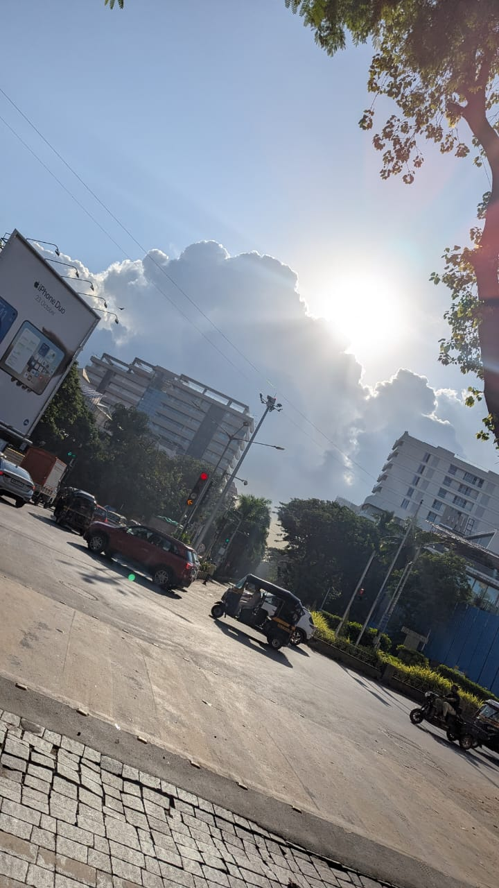
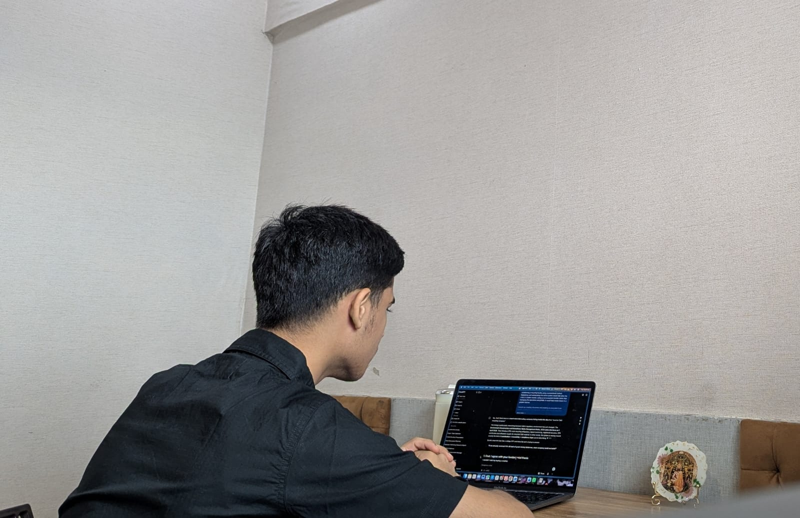
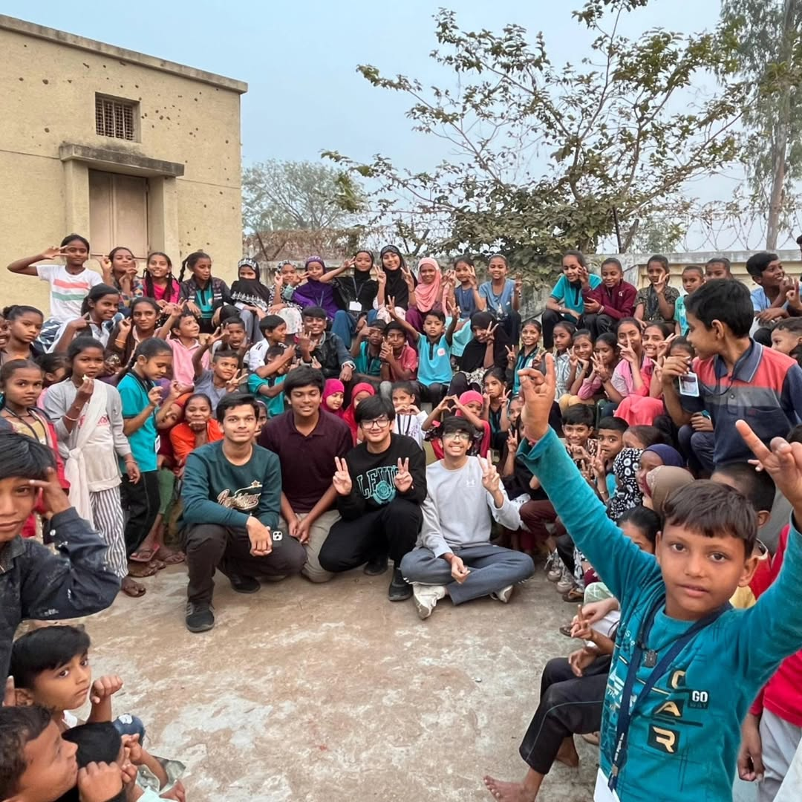
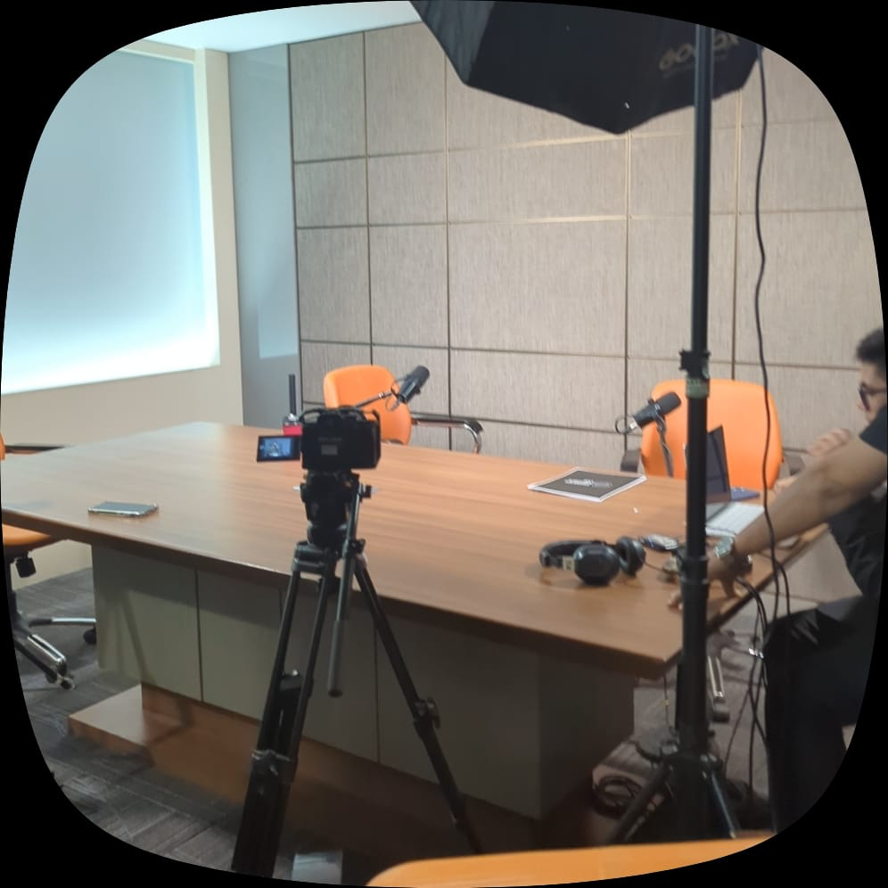

The Vision
Build something that helps people grow.
Building Ecosystems, Businesses and Organizations. Creating opportunities to grow together.

A curious mind. An entrepreneurial spirit. A constant pursuit of ideas, experiences, and meaningful impact.
Hiii! Looks like a serious face. But here's a very unserious hello.
Come say hi →

The Vision
Building Ecosystems, Businesses and Organizations. Creating opportunities to grow together.

The approach
Listening to Podcasts, Pitching And Playing with Ideas, Buiding Experiences and much more. #FuelingTheVision

The foundation
Business, sustainability and growth, grounded in my Indian roots.
| Question | Answer |
|---|---|
| Studying | BBA at NMIMS Mumbai and IIMBx online BBA |
| Languages | English, Gujarati, Hindi. Learning Japanese and Chinese. |
| Excited by | Entrepreneurship, self-growth and reading, sustainability and Indian culture |
| Also | Co-founder of Jeevartan Foundation |
| From / now | Anand, Gujarat / Mumbai |
A few things I'm learning, questioning and working on — through real experiences, conversations and experiments.
Working on clearer thinking, communication, learning, discipline and the ability to turn ideas into action.
The person in progress(Becoming.Manan) →Exploring sustainable consumption, systems thinking and the balance between quality, affordability and convenience with planet and people at heart of each component.
The base at Jeevartan →Exploring customer behaviour, retention and digital opportunities in traditional businesses. Learning how established businesses can build stronger customer relationships.
Inside Ronak Tyres → Work
Work

ContactStill figuring things out. Always up for a good conversation. →